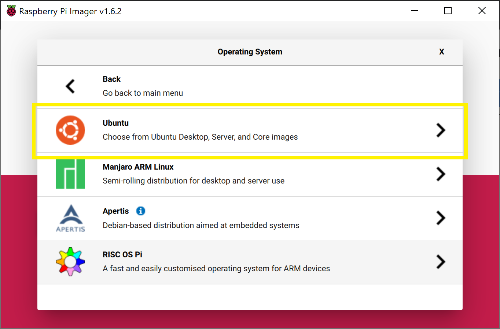

Robot Setup#
This guide will walk through the steps to install Ubuntu Server 20.04 LTS, ROS Noetic, and all dependencies on a Raspberry Pi 4 B. This Pi is then embedded within the Robotis TurtleBot3 Burger along with a USB Camera. The robotics system, TurtleBot3, is utilized in the United States Air Force Academy’s Electrical and Computer Engineering department to teach undergraduate students robotics. You can follow the below steps or a Raspberry Pi image can be provided by emailing Steven Beyer (sbeyer@beyersbots.com). This guide is adapted from the TurtleBot3 e-Manual.
Hardware#
Below is a list of recommended hardware and links. Other off-the-shelf components can replace the ones below.
USB Camera (Any USB Cam will work, this is the one we use)
128 GB High Speed MicroSD card
Monitor, mouse, and keyboard
If using an older version of the TurtleBot3 with a Jetson Nano or Raspberry Pi 3 B+ you will need to purchase a Raspberry Pi 4 Model B (preferably with 8 GB of RAM))
Hardware Assembly#
Follow the Robotis e-Manual for hardware assembly stopping after installing the Raspberry Pi.
Raspberry Pi#
A Raspberry Pi 4 B with 8 GB of RAM is used throughout this curriculum. Ensure heat sinks are propertly installed on the Pi such as these from CanaKit.
Also, a small fan can be installed to help with cooling. We used this 3D printed bracket to mount the fan.
{kind=link}
Camera#
After installing the Raspberry pi level of the TurtleBot3 you need to install the USB Camera Mount prior to finishing the robot build. The mount used in this course can be found in the curriculum material and is installed on two of the front standoffs on the TurtleBot3.

Software#
Download Ubuntu and flash MicroSD card#
There are multiple ways to download and install Ubuntu 20 to a MicroSD card, but the Raspberry Pi Imager is one of the easiest. Instructions for installing the imager on your operating system can be found on the Raspberry Pi OS software page.
Once installed, start the imager and select the “CHOOSE OS” button.

Scroll down the menu and select “Other general purpose OS”.

Next, select "Ubuntu". 
{kind=link}
Lastly, scroll and select the latest 64-bit version of "Ubuntu Server 22.04 LTS".
{kind=link}
Now that you have the correct image selected, you need to choose the correct storage device that corresponds to the MicroSD card. Select “CHOOSE STORAGE”.
Warning
This process will overwrite the drive, so ensure you select the correct device! You can select “CHOOSE STORAGE” before inserting the MicroSD card, then insert it, and the card will be the new drive that pops up.
Once you are sure the correct drive is selected, click “WRITE”.
Once complete you should have an Ubuntu SD card! Ensure your Raspberry Pi is powered off, connected to a monitor, keyboard, and mouse, and insert the SD card.
Ubuntu Setup#
Login and changing password#
Once Ubuntu boots up you will be prompted to enter the login and password. It may take a few minutes on first boot to configure the default username and password, so if login fails, try again after a few minutes. The default username is ubuntu and password is ubuntu.
On first login, you will be prompted to change the password. Enter the current password, ubuntu, and then enter a new password twice.
Changing username (optional)#
I like to change the username to “pi” so I remember that this machine is a Raspberry Pi. This is optional and you can change the username to anything you like.
First, add a temp user:
sudo adduser temp
Enter an easy to remember password, and then hit enter until you are back at the terminal prompt.
Add the temp user to the sudo group:
sudo adduser temp sudo
Log out of ubuntu user:
exit
Login to temp user account.
Change the ubuntu username to the new username:
sudo usermod -l newUsername ubuntu
sudo usermod -d /home/newHomeDir -m newUsername
For example:
sudo usermod -l pi ubuntu
sudo suermod -d /home/pi -m pi
Log out of temp user and log in with new username and password (the password is still the same as the password you set for the ubuntu user).
Delete the temp user:
sudo deluser temp
sudo rm -r /home/temp
Now at the terminal prompt you should see pi@ubuntu: and if you type pwd you should see /home/pi (with pi replaced with the username you chose).
Change hostname#
If you have multiple robots on your network it is good to give each a unique hostname. We number each robot from 0-n and each robot has a corresponding hostname (e.g., robot0).
Change the hostname with the command line editor of your choice.
sudo nano /etc/hostname
Replace ubuntu with the hostname of choice, such as robot0. Save and exit.
The new hostname will not take effect until reboot. Don’t reboot yet, though! We have a couple more things to accomplish before reboot.
Set up Wi-Fi#
Until a desktop GUI is installed we have to work with the command line to set up the Wi-Fi. This is the most reliable method I have found and we will delete these changes once a GUI is installed.
First, determine the name of your Wi-Fi network adapter by typing ip link (for the Raspberry Pi version of Ubuntu Server 20.04 LTS it is typically wlan0).
pi@ubuntu:~$ ip link
1: lo: <LOOPBACK,UP,LOWER_UP> mtu 65536 qdisc noqueue state UNKNOWN mode DEFAULT group default qlen 1000
link/loopback 00:00:00:00:00:00 brd 00:00:00:00:00:00
2: eth0: <NO-CARRIER,BROADCAST,MULTICAST,UP> mtu 1500 qdisc mq state DOWN mode DEFAULT group default qlen 1000
link/ether e4:5f:01:15:5b:30 brd ff:ff:ff:ff:ff:ff
3: wlan0: <BROADCAST,MULTICAST,UP,LOWER_UP> mtu 1500 qdisc fq_codel state UP mode DORMANT group default qlen 1000
link/ether e4:5f:01:15:5b:31 brd ff:ff:ff:ff:ff:ff
Open the /etc/netplan/50-cloud-init.yaml file in your favorite browser:
sudo nano /etc/netplan/50-cloud-init.yaml
Edit the file so it looks like the below (use spaces and not tabs) replacing wlan0 with your wireless network interface and using your SSID and password:
# This file is generated from information provided by the datasource. Changes
# to it will not persist across an instance reboot. To disable cloud-init's
# network configuration capabilities, write a file
# /etc/cloud/cloud.cfg.d/99-disable-network-config.cfg with the following:
# network: {config: disabled}
network:
ethernets:
eth0:
dhcp4: true
optional: true
version: 2
wifis:
wlan0:
optional: true
access-points:
"YOUR-SSID":
password: "YOUR-PASSWORD"
dhcp4: true
Save and exit.
Apply your changes using the following command:
sudo netplan apply
Alternatively, you can reboot your system and the changes will be automatically applied once the system boots.
Optional: It may be beneficial to setup a static IP address. To do this you need to determine your subnet and gateway.
Determine subnet and gateway addresses:
ubuntu@ubuntu:~$ ip route
default via 192.168.0.1 dev wlan0 proto static
192.168.0.1/24 dev wlan0 proto kernel scope link src 192.168.0.201
Set static IP within subnet range:
# This file is generated from information provided by the datasource. Changes
# to it will not persist across an instance reboot. To disable cloud-init's
# network configuration capabilities, write a file
# /etc/cloud/cloud.cfg.d/99-disable-network-config.cfg with the following:
# network: {config: disabled}
network:
ethernets:
eth0:
dhcp4: true
optional: true
version: 2
wifis:
wlan0:
dhcp4: no
access-points:
"robotics_5GHz":
password: "YOUR-PASSWORD"
addresses:
- 192.168.4.208/24
routes:
- to: default
via: 192.168.4.1
nameservers:
addresses: [192.168.4.1, 8.8.8.8, 1.1.1.1]
optional: true
Disable Automatic Updates#
Ubuntu will attempt to apply system updates in the background. This has caused issues in the past with ROS dependencies and keys. Disabling automatic updates allows you to control when Ubuntu installs updates. While this is not a good habit for general computer security, it is fine for this application of an embedded robotics system. Ensure you periodically update and upgrade your system.
Open the auto updater configuration file using sudoedit:
sudoedit /etc/apt/apt.conf.d/20auto-upgrades
Change the content from:
APT::Periodic::Update-Package-Lists "1";
APT::Periodic::Unattended-Upgrade "1";
to:
APT::Periodic::Update-Package-Lists "0";
APT::Periodic::Unattended-Upgrade "0";
APT::Periodic::AutocleanInterval "0";
APT::Periodic::Download-Upgradeable-Packages "0";
Set the systemd to prevent boot-up delay even if there is no network at startup. Run the command below to set mask the systemd process using the following command.
$ systemctl mask systemd-networkd-wait-online.service
Disable Suspend and Hibernation
$ sudo systemctl mask sleep.target suspend.target hibernate.target hybrid-sleep.target
Reboot the Raspberry Pi.
$ reboot
Enable SSH and generate new keys#
sudo ssh-keygen -A
sudo systemctl start ssh
Add Swap Space (optional)#
The Raspberry Pi 4 B used in our course has 8 GB of RAM. Swap Space might not be necessary, but with a larger SD card it is beneficial.
You can check that there is no active swap using the free utility:
pi@ubuntu:~$ free -h
total used free shared buff/cache available
Mem: 7.6Gi 201Mi 7.1Gi 3.0Mi 328Mi 7.3Gi
Swap: 0B 0B 0B
The fallocate program can be used to create a swap:
sudo fallocate -l 2G /swapfile
If it was created correctly, you should see the below:
pi@ubuntu:~$ ls -lh /swapfile
-rw------- 1 root root 2.0G Aug 19 17:30 /swapfile
Make the file only accessible to root by typing:
sudo chmod 600 /swapfile
Verify the permissions by typing the following:
pi@ubuntu:~$ ls -lh /swapfile
-rw------- 1 root root 2.0G Aug 19 17:28 /swapfile
Now only root user has read and write flags enabled.
You can set the file as swap space by typing the following:
pi@ubuntu:~$ sudo mkswap /swapfile
Setting up swapspace version 1, size = 2 GiB (2147479552 bytes)
no label, UUID=b5bc4abf-2bce-419e-870d-4d44a7a05778
Then turn on the swap file:
sudo swapon /swapfile
To verify that this worked you can type the following:
pi@ubuntu:~$ sudo swapon --show
NAME TYPE SIZE USED PRIO
/swapfile file 2G 0B -2
This swap will only last until reboot, so to make it permanent at it to the fstab file:
echo '/swapfile none swap sw 0 0' | sudo tee -a /etc/fstab
Now it is time to reboot by typing
sudo reboot
Verify changes#
After reboot and you log in your new hostname should be listed at the terminal (e.g., pi@robot0). Additionally, you should be connected to Wi-Fi and have an IP Address. You can confirm by typing the following and observing the IP address in the output:

You can now use this IP address to create a remote secure shell into the TurtleBot3 using either the IP address or hostname if your network provides Dynamic DNS. From another machine connected to your network type one of the following:
ssh username@IP_ADDRESS
or
ssh username@HOSTNAME
Lastly, ensure your swap space is still active by typing the following and observing the output:
pi@robot99:~$ free -h
total used free shared buff/cache available
Mem: 7.6Gi 224Mi 6.5Gi 3.0Mi 903Mi 7.3Gi
Swap: 2.0Gi 0B 2.0Gi
Update and Upgrade#
Since we turned off automatic updates, you should periodically update and upgrade. You can use this single command to accomplish both while accepting all upgrades:
sudo apt update && sudo apt -y upgrade
Install Ubuntu Desktop (optional)#
A desktop GUI is not necessary for a remote machine like the USAFABot and will take up about 1.4 GB of RAM to run. I include directions for installing the Ubuntu GNOME 3 desktop environment for completeness and flexibility. The following will install the environment while confirming the installation:
sudo apt -y install ubuntu-desktop
Network Settings#
If you do install the Ubuntu Desktop and want to use the GUI to setup the Wi-Fi network then you need to remove the settings included in the /etc/netplan/50-cloud-init.yaml file. It should look like the original file when complete:
# This file is generated from information provided by the datasource. Changes
# to it will not persist across an instance reboot. To disable cloud-init's
# network configuration capabilities, write a file
# /etc/cloud/cloud.cfg.d/99-disable-network-config.cfg with the following:
# network: {config: disabled}
network:
ethernets:
eth0:
dhcp4: true
optional: true
version: 2
wifis:
wlan0:
dhcp4: true
optional: true
You can now use the GUI interface in the top right of the screen to set up a Wi-Fi connection.
Setup GitHub SSH Keys#
The following assumes you already have a GitHub account.
Create SSH keys to use with your GitHub account by typing the following using the same email as you GitHub login:
cd
ssh-keygen -t ed25519 -C "github@email.com"
When prompted to “Enter a file in which to save the key”, hit enter.
At the prompt, type a secure password.
Start the ssh-agent in the background and add your SSH private key to the ssh-agent:
eval "$(ssh-agent -s)"
ssh-add ~/.ssh/id_ed25519
Open the public key with your favorite command line editor (this is easier to accomplish via an SSH connection from a desktop machine with a GUI so you can copy the public key to your GitHub account).
nano ~/.ssh/id_ed25519.pub
Copy the contents of the file (maximize the window and ensure you copy the entire contents up to the GitHub email).
Open a web browser and sign in to your GitHub account.
In the upper-right corner of any page, click your profile photo, then click Settings:

In the user settings sidebar, click SSH and GPG keys:

Click New SSH key:

In the Title field, add a descriptive label for the new key, such as “robot0”.
Paste your key into the Key field (contents of the .pub file).
Click Add SSH key.
Update Alternatives#
Python3 is installed in Ubuntu20 by default. Some ROS packages utilize the “python” command instead of “python3” so we need to create a new executable, “/usr/bin/python” that will call the Python3 (basically use the command “python” to call Python3):
sudo update-alternatives --install /usr/bin/python python /usr/bin/python3 10
ROS Noetic#
At this point, the Ubuntu environment is setup. Now we will setup the ROS requirements for the TurtleBot3. All of these instructions are adapted from the ROS wiki. ROS Noetic is the latest version of ROS 1 that supports Ubuntu Focal.
Installation#
Accept software from packages.ros.org:
sudo sh -c 'echo "deb http://packages.ros.org/ros/ubuntu $(lsb_release -sc) main" > /etc/apt/sources.list.d/ros-latest.list'
Set up keys:
sudo apt install curl # if you haven't already installed curl
curl -s https://raw.githubusercontent.com/ros/rosdistro/master/ros.asc | sudo apt-key add -
Install ROS Noetic:
sudo apt update
sudo apt -y install ros-noetic-ros-base
The base version provides the Bare Bones of ROS to include minimum packaging, build, and communications libraries. No GUI tools are installed. As the Raspberry Pi is embedded into the USAFABot it is ideal to keep overhead as low as possible. Many of the GUI tools will be ran on the main machine.
Install ROS dependencies for building packages:
sudo apt install python3-rosdep python3-rosinstall python3-rosinstall-generator python3-wstool python3-pip build-essential
Initialize rosdep
sudo rosdep init
rosdep update
Source the ROS setup file:
source /opt/ros/noetic/setup.bash
Create your ROS workspace:
mkdir -p ~/robot_ws/src
cd ~/robot_ws/
catkin_make
Setup ROS environment variables and setup scripts within the ~/.bashrc file. Open the ~/.bashrc file with your favorite command line editor and add the following to the bottom:
source /opt/ros/noetic/setup.bash
source ~/robot_ws/devel/setup.bash
export ROS_PACKAGE_PATH=~/robot_ws/src:/opt/ros/noetic/share
export ROS_HOSTNAME=`hostname` # note these are backticks, not apostrophes
export ROS_MASTER_URI=http://MASTER_IP:11311 # replace "MASTER_IP" with IP address/hostname of your master
export EDITOR='nano -w' # replace with editor of choice used with rosed command
export TURTLEBOT3_MODEL=burger
export LDS_MODEL=LDS-01 # replace with LDS-02 if using new LIDAR
Any time you make changes to your ~/.bashrc file you must source it:
source ~/.bashrc
Dependencies#
There are a number of ROS packages required to operate the TurtleBot3.
ROS Dependencies#
sudo apt-get install ros-noetic-laser-proc ros-noetic-hls-lfcd-lds-driver \
ros-noetic-rgbd-launch ros-noetic-rosserial-arduino \
ros-noetic-rosserial-python ros-noetic-rosserial-client \
ros-noetic-rosserial-msgs ros-noetic-amcl ros-noetic-map-server \
ros-noetic-move-base ros-noetic-urdf ros-noetic-xacro \
ros-noetic-compressed-image-transport ros-noetic-gmapping \
ros-noetic-navigation ros-noetic-interactive-markers
NOTE: We may not need the following packages on the robot.
sudo apt-get install ros-noetic-rqt* ros-noetic-rviz
TurtleBot3 Dependencies#
sudo apt install libudev-dev ros-noetic-turtlebot3-msgs
cd ~/robot_ws/src
git clone -b develop https://github.com/ROBOTIS-GIT/ld08_driver.git
git clone https://github.com/ROBOTIS-GIT/turtlebot3.git
git clone https://github.com/ROBOTIS-GIT/turtlebot3_simulations.git
ECE387 Curriculum#
git clone git@github.com:AF-ROBOTICS/ece387_curriculum.git
The ece387_curriculum package includes all dependencies needed to run the TurtleBot3 nodes. We can automatically install these dependencies using the ROSDEP tool:
cd ~/robot_ws
rosdep install --from-paths src --ignore-src -r -y
This will take a while.
Now we can make and source our workspace:
cd ~/robot_ws
catkin_make
source ~/.bashrc
The last set of dependencies we need to install are Python dependencies. These are listed within our ece387_curriculum package and can be installed using the pip3 tool:
roscd ece387_curriculum
pip3 install -r requirements.txt
üìùÔ∏è Note: the ‚Äúdlib‚Äù package will take quite a while to install.
Updating OpenCR firmware#
The last step is updating the firmware for the OpenCR controller board.
Install required packages on the Raspberry Pi
sudo dpkg --add-architecture armhf
sudo apt-get update
sudo apt-get install libc6:armhf
Setup the OpenCR model name:
export OPENCR_PORT=/dev/ttyACM0
export OPENCR_MODEL=burger_noetic
Download the firmware and loader, then extract the file:
wget https://github.com/ROBOTIS-GIT/OpenCR-Binaries/raw/master/turtlebot3/ROS1/latest/opencr_update.tar.bz2
tar -xvf opencr_update.tar.bz2
rm -rf ./opencr_update.tar.bz2
Upload firmware to the OpenCR:
cd ./opencr_update
./update.sh $OPENCR_PORT $OPENCR_MODEL.opencr
A successful firmware upload for TurtleBot3 Burger will look like:
pi@robot8: ~
$ cd opencr_update/
pi@robot8: ~/opencr_update
$ ./update.sh $OPENCR_PORT $OPENCR_MODEL.opencr
aarch64
arm
OpenCR Update Start..
opencr_ld_shell ver 1.0.0
opencr_ld_main
[ ] file name : burger_noetic.opencr
[ ] file size : 183 KB
[ ] fw_name : burger_noetic
[ ] fw_ver : 1.2.6
[OK] Open port : /dev/ttyACM0
[ ]
[ ] Board Name : OpenCR R1.0
[ ] Board Ver : 0x17020800
[ ] Board Rev : 0x00000000
[OK] flash_erase : 0.99s
[OK] flash_write : 1.60s
[OK] CRC Check : 12A5C20 12A5C20 , 0.005000 sec
[OK] Download
[OK] jump_to_fw
If not successful, attempt the debug methods in the OpenCR Setup guide.